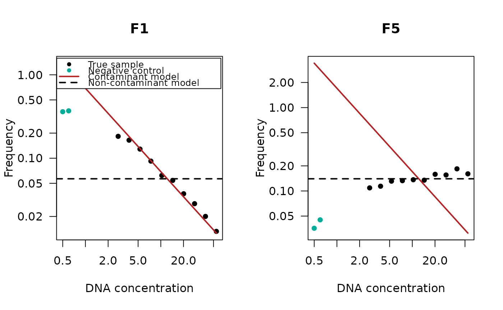

Plot Feature Frequency against DNA Concentration (decontam)
Source:R/decontam.r
decontam_frequency_plot.Rddecontam's frequency test in pictures (its plot_frequency()): each
sample's relative abundance of a feature against its DNA concentration,
on log scales, with the two models that decontam()'s frequency score
compares. A contaminant falls along the line of slope \(-1\)
(frequency \(\propto 1/C\)); a true sequence along the horizontal line
(frequency independent of \(C\)).
Usage
decontam_frequency_plot(
counts,
features,
conc,
neg = NULL,
data = NULL,
margin = 1L,
norm = "percent",
models = TRUE,
log = TRUE,
legend = "topright",
...
)Arguments
- counts
A count table (samples \(\times\) features), or any of the objects listed under Input Types. Each sample's values are divided by its total (
norm = 'percent'). Samples with no counts are left out, with a warning.- features
The features to plot: their names, their 1-based indices, or a logical vector with one value per feature. Each gets its own panel.
- conc
Each sample's DNA concentration, as for
decontam(): required.- neg
Optional: which samples are negative controls, as for
decontam(). Controls are drawn in their own colour and left out of the fitted lines, as they are out of the frequency test. Default:NULL.- data
Optional sample metadata: a data frame with one row per sample, holding
conc,negorbatchas columns. Rows are matched to the samples incountsby row name, and rows for other samples are ignored; without row names, they must be in the same order as the samples. Default:NULL.- margin
The margin containing samples.
1if samples are rows,2if samples are columns. Ignored whencountsis a special object class (e.g.phyloseq). Default:1- norm
'percent'(the default): each sample's values are divided by its total, as decontam'snormalize = TRUE.'none': the values are used as given (relative abundances already, or counts from samples of equal depth), asnormalize = FALSE. Both tests need non-negative relative abundances, so no other norm is allowed.- models
Whether to draw the two fitted lines. Default:
TRUE.- log
Whether both axes are on a log scale. Default:
TRUE.- legend
Where the legend goes, as a
graphics::legend()keyword, orNULLfor none. Default:"topright".- ...
Passed on to
graphics::plot(), such asmain,pchorcex.
Value
A data frame of what was drawn, invisibly: feature, sample
(the sample's name, or index), conc, neg and abundance (after
norm), one row per feature and sample.
Details
Over the true samples (not controls, and not NA in neg) where the
feature is present, the non-contaminant model is the horizontal line at
the geometric mean frequency, \(\exp(\overline{\log f})\), and the
contaminant model is \(f = \exp(\overline{\log f + \log c}) / c\).
Samples where the feature is absent can't be drawn on a log scale, and
are left out. Samples with no counts are left out, with a warning, as by
decontam(). With batches, plot each batch's samples separately.
Differences from decontam's plot_frequency(): base graphics instead
of ggplot2, one panel per feature (par(mfrow), restored on exit); the
lines leave out samples whose neg is NA, as the test does; and the
contaminant line is red and solid and the non-contaminant line black and
dashed, as decontam draws them.
Examples
set.seed(1)
conc <- c(exp(seq(1, 4, length.out = 10)), 0.5, 0.6)
neg <- rep(c(FALSE, TRUE), c(10, 2))
counts <- matrix(rpois(12 * 8, 200), 12, 8,
dimnames = list(NULL, paste0('F', 1:8)) )
counts[, 1:2] <- round(counts[, 1:2] * 5 / conc)
# F1 is a contaminant, F5 is not.
decontam_frequency_plot(counts, c('F1', 'F5'), conc, neg)
